Task collection file
Prerequisites
SIGNA Premier to SIGNA Premier XT, does not require any new system hardware.
- Make sure the filter tool is on the floor below ICC tanks
- Make sure hoses are not kinked
- Make sure the vent on the return hose is open
- Repeat this step until the pump is primed
To proceed with the tasks in this procedure, Magmon3 must be configured for Proprietary mode. If Magmon3 is not configured for Proprietary mode, refer to Magmon3 Installation and Service Manual, Direction 5212670.
Use an antistatic wrist strap and mat while performing this procedure to prevent electrostatic discharge (ESD).
- Do Emergency Off Connection Safety check:
- Launch the Service Desktop Manager, click the Tools button and select System Shutdown from the Tools menu.
- Turn off the breakers for the Host, ICN (Recon), and 48V Gradient Control if you are testing more E-Off buttons.
- Press one of the E-Off buttons (the location of buttons was determined by the customer). Generally, the E-Off button is located on the wall next to the computer equipment or next to the MR magnet room doors.
- Make sure that power was removed from the PDU by viewing the PDU phase indicator lights and checking the input voltage test points (the lights may have burned out).
- Make sure that power was removed from the Heat Exchange Cabinet (HEC). Both the PLC Signal Box and VFDs lights will be off.
- On the System Main Disconnect Panel, press the SYSTEM ON button, reset the [On] switch, and on the PDU, press the EMO RESET button.
- Repeat steps a through e above for all E-Off buttons, including the SYSTEM OFF button on the MDP.
ICW installation mode is used for new installations and upgrades.
Figure 1. ICW Install mode screen
- The left pane lists all tasks required to complete the installation.
- Tasks must generally be completed in order, from top to bottom (tasks with prerequisites are grayed out until all prerequisites are completed). Non-grayed out tasks may be completed in any order or in parallel.
- After a task is completed, click Check Status in the right pane. Completed tasks turn blue; failed tasks turn red.
- ICW remains in installation mode until all tasks are successfully completed.
Procedure
- Replacing the longitudinal drive motor
- Disconnect the cables from the motor.
- Loosen the two upper set screws on the coupling between motor and gear box. Rotate the motor axis and coupling by hand in order to get an access to both hex screws on the coupling.
Figure 2. Interim drive assembly
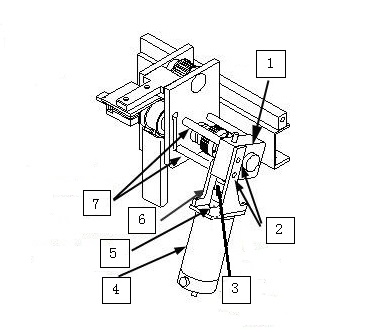
1 Gear Box 2 2 Long Screws 3 2 Upper Set Screws Location 4 Motor 5 Separation Location 6 Inner Bracket 7 Aluminum Spacers 
 caution
caution
- Remove side support plate by release screws.
Figure 3. Side support plate
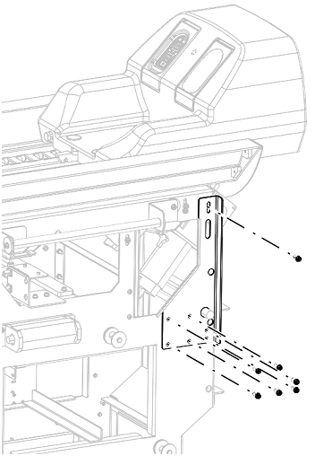
- While one person holds onto the motor firmly with both hands, the other person should remove flathead screws and nuts that secure the gear box to the bridge.
Figure 4. Mounted Drive Motor Assembly
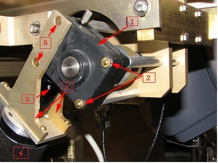
1 Gear Box 2 Hex Nuts (2) 3 Motor Mounting Brackets 4 Motor 5 Flexible Coupling 6 Mounting Screws - With the last screw removed, take off the motor and its frame from the bridge. Then carefully remove the motor from Magnet Room by placing the motor on the floor and against the wall farthest from the magnet. The service path to take the motor out of the scan room is shown in Figure 5.
Figure 5. 200G Line and Route to Carry Module
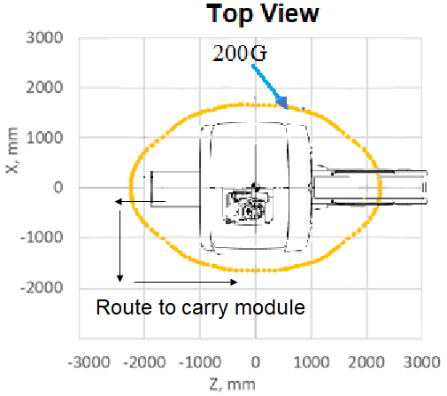
- With the motor outside of the Magnet Room, remove the frame and coupling. Replace the failed motor with the new one.
Figure 6. Motor
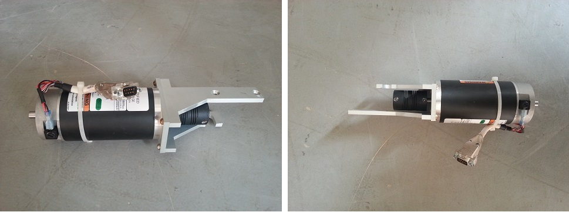
- Carefully bring the motor and bracket assembly into the Magnet Room along the same path used to remove the assembly.
- To reinstall the motor and bracket assembly in the Rear Pedestal, ensure that a second person holds onto the motor firmly with both hands, while the first person reconnects the motor and bracket assembly to the gear assembly. Tighten the screws and nuts to secure the motor frame.
- Tighten the two set screws on the coupling to finish the motor installation. Make sure one of the hex set screws must be in front of axis flat to prevent free rotation under the load.
- Reattach the cables to the motor.
- non-proprietary configuration
- Log on using the non-proprietary user name and password.Input is case-sensitive.
- Username: MMConfig
- Password: ConfigMonitor
- On the Set Time and Date page, select a value from each list for the following fields:
- Date
- Month
- Year
- Hour
- Minute
- Time Zone
Figure 7. Set Time and Date page
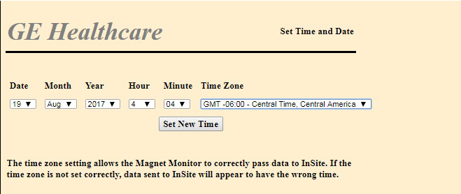
- Click Set New Time.
- ICW Steps
- Before opening ICW for the first time, make sure all options purchased by the customer are installed. note:
The option key check is only done the first time the tool is used. Any change to the option key status after ICW has started will not be displayed.
- Use the following tables as a reference to identify what tasks are needed to complete each procedure within ICW.note:
Relaunching a completed task in ICW displays a dialog showing prerequisite tasks. You may want to rerun the prerequisites listed before rerunning the selected task.
Figure 8. ICW alert dialog

-
Each procedure is stand-alone; procedures are not presented in a specific order. You can only select one procedure at a time; however, you can complete multiple procedures. Use the Back button or the waffle menu to return to the main menu and select a different procedure.
- UA/3TLC only - Install the manifold retaining clips (5782118) and Velcro straps (5754795).
- Slide the three manifold retaining clips between the blue and black manifold at each gradient coil manifold bracket.
- Secure a spacer to each bracket with an M6 x 50 Socket Head screw (1000-M6C050-33).
- Install a Velcro strap (only one is shown) on each side of each manifold support bracket assembly.
Figure 9. Velcro strap and manifold retaining clip (UA/3TLC shown)
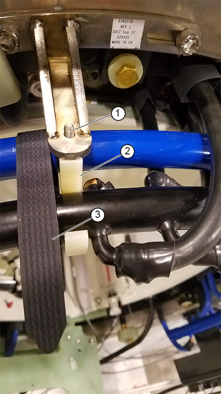
1 M6 x 50 Socket Head screw (1000-M6C050-33) 2 Manifold retaining clip ( 5782118) 3 Velcro straps (5754795) - UA/3TLC only - Install the manifold retaining clips (5782118) and Velcro straps (5754795).
- Slide the three manifold retaining clips between the blue and black manifold at each gradient coil manifold bracket.
- Secure a spacer to each bracket with an M6 x 50 Socket Head screw (1000-M6C050-33).
- Install a Velcro strap (only one is shown) on each side of each manifold support bracket assembly.
Figure 10. Velcro strap and manifold retaining clip (UA/3TLC shown)
1 M6 x 50 Socket Head screw (1000-M6C050-33) 2 Manifold retaining clip ( 5782118) 3 Velcro straps (5754795) - UA/3TLC only - Install three gradient coil manifold brackets.
- Install a gradient coil manifold bracket (5782116) on the first and second holes to the left of the top center hole and secure with two M10 x 16 Socket Head Screws (1000-M10C016-33).
- Install a gradient coil manifold bracket (5782117) on the first and second hole to the right of the center hole and secure with two M10 x 16 Socket Head Screws (1000-M10C016-33).
- Install a gradient coil manifold bracket (5782116) in the location shown and secure with M10 x 16 Socket Head Screws (1000-M10C016-33)(standoffs are shown for perspective, they are not yet installed).
- Tighten both the nut and screw to a torque of 15 ft-lb (20.33 Nm).
Figure 11. Install the gradient coil cable manifold brackets (UA/3TLC shown)
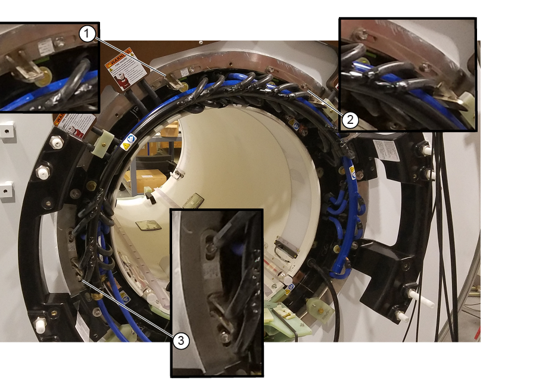
- W-WB/G3 only - Install two gradient coil cable manifold supports.note: If the black flexible gradient coil hoses interfere with the manifold bracket, attempt to rotate the gradient coil manifold assembly to remove the interference (the movement comes from the flexible hoses).
- Attach the two gradient coil manifold brackets (5782532) to the busbar lower support plate with two M6 x 20 Stainless Steel Screws (1003-M6C020-33).
- Position a manifold retaining clip (5782118) below the hoses and a top bracket. Slide the manifold support bracket between the hoses and align it with the top bracket.
- Attach the manifold retaining clip to the manifold bracket with an M6 x 50 Socket Head screw (1000-M6C050-33) by inserting the screw into the plastic manifold bracket from below.
- Repeat with the second manifold support bracket.
- On each side of each manifold support bracket assembly, install a Velcro strap (5754795).
Figure 12. W-WB/G3 Velcro straps
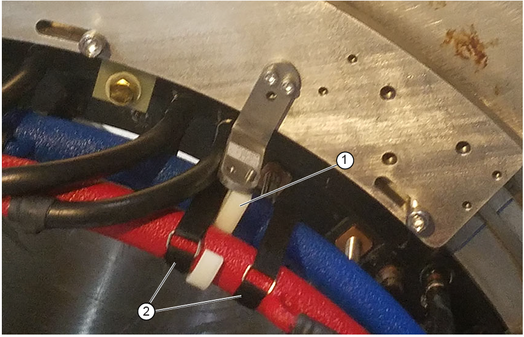
- Use this note to refer back to something listed in the Conditions table. Added 8/11/17 in response to SME concerns that FEs won't read or remember the conditions by the time they get to a step for which a condition is critical.note: Make sure that the required condition listed above is met.
- Shut down LOTO Startup Checkscan
- Notify affected personnel that LOTO will be applied.
- Make sure the host computer is shut down.
- Apply LOTO to the power source(s).
- Make sure power is no longer reaching the system PDU and gradient PDU by measuring the voltage at the test points.
- Alert necessary personnel that power is being restored.
- Remove the lock and tag.
- Restart the host computer.
- Perform a check scan.
- GOC service cover
- Remove the GOC service cover and disconnect the ground cable.
Figure 13. Remove the GOC service cover and disconnect the ground cable
- Remove the two screws.
- Lift up and remove the service cover.
- Disconnect the ground cable.
- Reconnect the ground cable and secure the service cover back in place.
- GOC Left Side Panel
- Remove the two screws that secure the left side panel of the GOC.
Figure 14. GOC left side panel
 note: The side panel has a short ground lead connecting it to the main chassis. When removing the side panel, do not strain this ground lead.
note: The side panel has a short ground lead connecting it to the main chassis. When removing the side panel, do not strain this ground lead. - Disconnect the short ground lead that connects the side panel to the GOC main chassis at the center of the lead.
Figure 15. Left side panel ground lead

- Remove the left side panel and put it in a safe place.
- Reconnect the ground cable and reinstall the GOC left side panel.
- System Login
- note: It is possible that the customer changed the default password. If you cannot log in, contact the customer for the correct password.
- ISC cover
The location of each Power Supply is in the following illustration.
Figure 16. Location of power supply
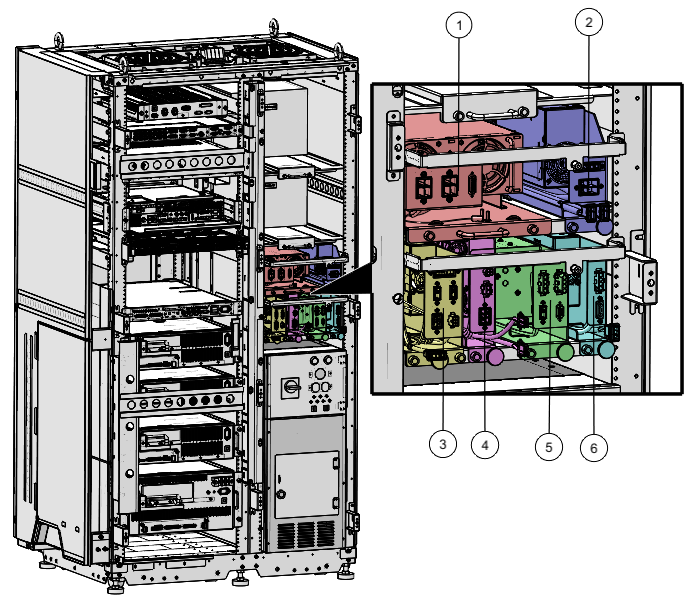
1 PS for RF amplifier 2 PS for DPP and MTD 3 PS for ICE 4 HVPS 5 PS for PHPS Lite 2 6 PS for LED power box - Remove system cabinet left cover.
- Raise the handlebar on left cover.
Figure 17. Removing system cabinet cover
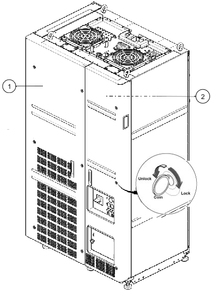
1 Left cover 2 Right cover - Unlock six fasteners with the coin.
- Remove left cover.
- Raise the handlebar on left cover.
- Remove system cabinet right cover.
- Remove the protect cover before SBGD.
- Disconnect two cables connected to protect cover.
- Loosen three screws to remove the protect cover.
Figure 18. Removing protect cover
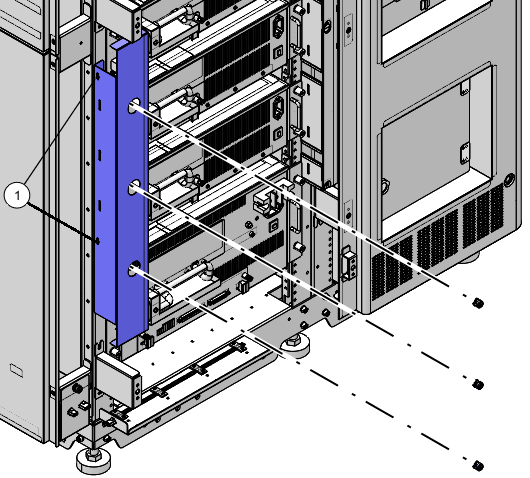
1 Cable connection area
- Remove the system cabinet left side cover.
Figure 19. Removing the system cabinet left side cover
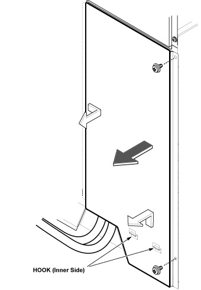
- Remove system cabinet right cover.
- Remove PDU lower front cover by loosening 6 screws.
Figure 20. Remove PDU lower front cover
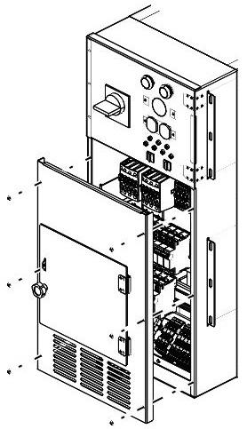
1 6 screws - Open PDU upper front panel by loosening three screws.
Figure 21. Open PDU upper front cover
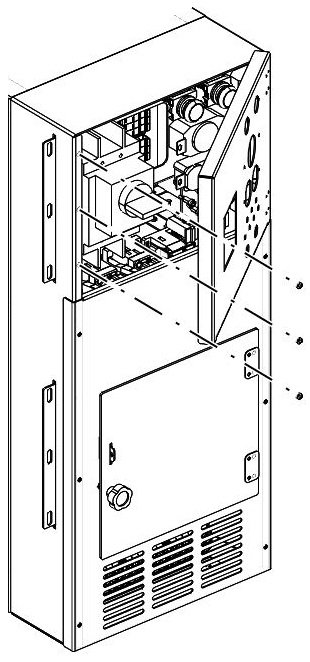
- Drain the coolant from the defect part. Refer to Draining coolant from SBGD

- warning
- Restore system cabinet covers.
- Installation Manuals - Perform Emergency Off Connection Safety check
- Chiller Control
- Turn off the Main Power QF1.
Figure 22. Main Power QF1
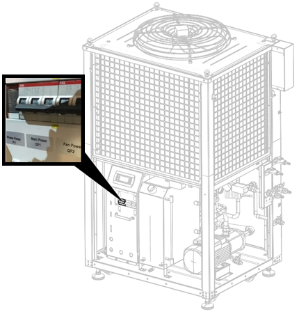
- Rotate the clips then remove the air filter.
Figure 23. Air Filter
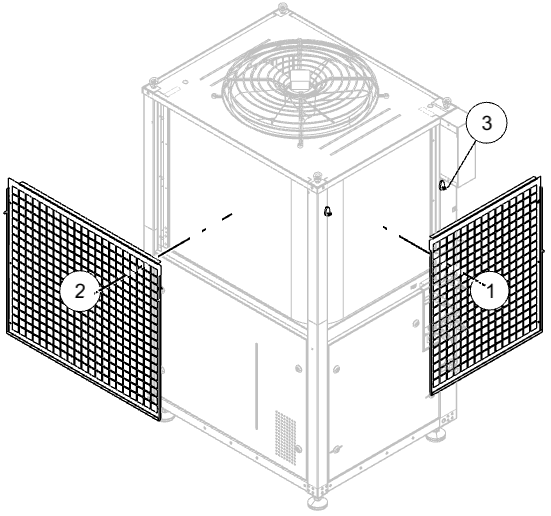
1 Clip 2 Air Filter - Remove back lower cover.
Figure 24. Back lower cover
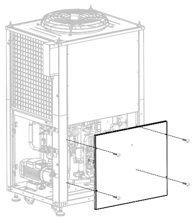
- Remove back upper cover.
Figure 25. Back upper cover
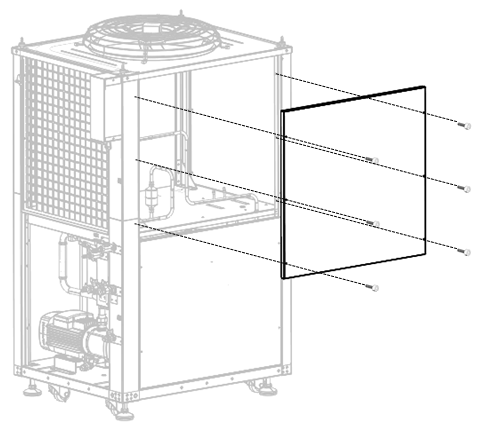
- Close all breakers on the front of control box.
Figure 26. Closing all breakers
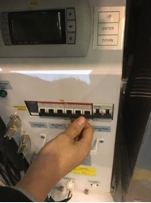
- Disconnect all cables from cable plug
Figure 27. Disconnecting Cables
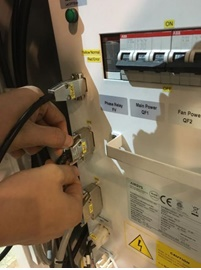
- Loosen the three screws securing the control box to the chiller.
Figure 28. Screws securing the control box
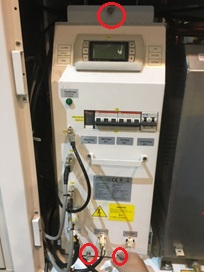
- Pull out the control box.
Figure 29. Pulling out the control box
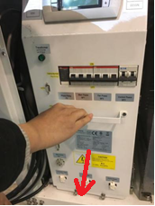
- Replacing MDT/RFM/TCE
- Disconnect the cables from MTD.
Figure 30. Removing the MTD Cables
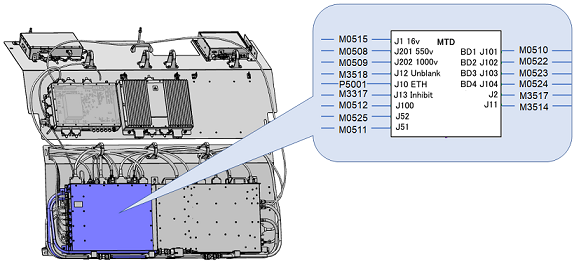
- warning
- Disconnect the cables from RFM.
Figure 31. Removing the RFM cables
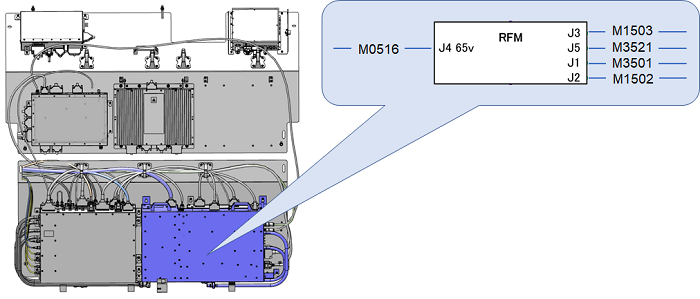
- Close the two valves.
Figure 32. Water valves with open direction
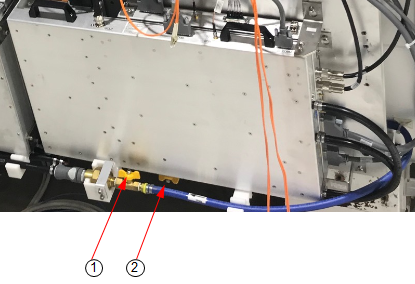
- Disconnect quick disconnect connectors of in and out hose.
- Loosen the four screws and remove the MTD.
Figure 33. Removing the MTD
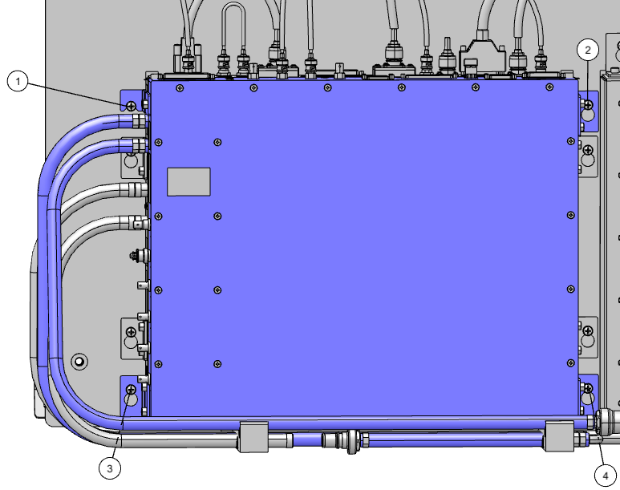
- Loosen the four screws and remove the RFM.
Figure 34. Removing the RFM
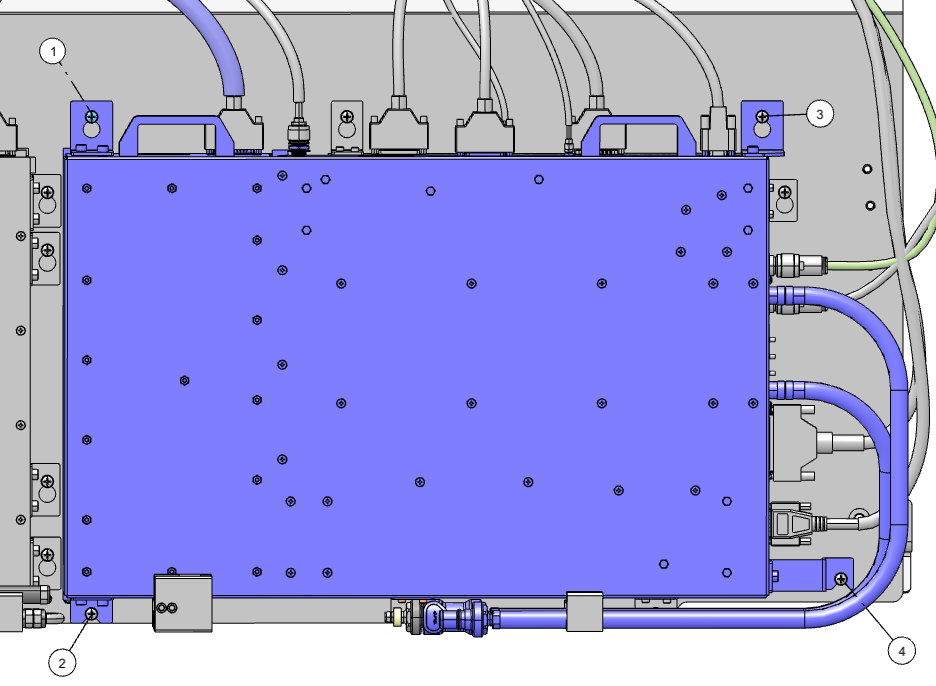
- Draining the coolant. Refer to Draining coolant from ISR.
- warning
note: Failing to drain the FRU prior to return can irreparably damage it if the residual internal coolant freezes during transit. -
Use the pump to push out the coolant until there is no coolant remaining inside.
note: You can re-use the ICC coolant to fill CCU/GCU tanks. If you are disposing the coolant, please refer to the appropriate MSDS and the site requirements.
- Magnet Trim Ring
- If installed, lower the patient table to the down-limit position.
Figure 35. Front trim ring alignment
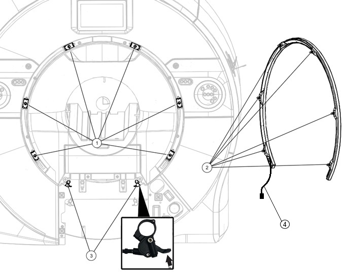
1 Remote latches 2 Remote latch pins 3 Remote latch release levers 4 Power cable - EMO reset
- Press the EMO RESET switch.
Figure 36. EMO Reset Switch
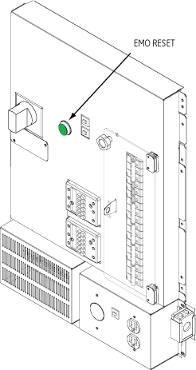
notice: You must wait 1 hour after restoring power before performing certain calibrations and/or a customer scan. - SCIM and Keyboard
- Disconnect the USB cable from the keyboard. This is a 1m USB extension that goes directly to the host computer.
- Lift the keyboard to detach it from the SCIM base plate. The keyboard is attached with Velcro.
- note: The glue on the Velcro must have time to set. Do not attempt to remove the keyboard from the SCIM for 24 hours.
- Dust Filter
- Remove the dust filter.
Figure 37. Remove dust filter
- Clean the dust filter and reinstall it.
- If replacing the computer, remove the Velcro strips from the old computer and install them on the new computer.
- If the old filter or Velcro strips are not reusable, install a new set.
- Phantom Positioning
- Follow the steps below to place the DQA III phantom on the table.
Figure 38. Phantom positioning on table
 note: This image is a representative example. Actual systems may vary.
note: This image is a representative example. Actual systems may vary.- Place the phantom positioner onto the hollow for HNU. R/L direction will be fit to the hollow.
- Push the phantom positioner toward the magnet until the two bottom bars reach the end of the hollow.
- Place the phantom onto the positioner and verify it is level and not rotated.
- Landmark on the center line of the phantom. The laser must be in the middle of the line. Press Advance to Scan.
- Drain ICC Primary Water Circuit
- Close the facility water valves.
- Drain the ICC primary water circuit into a 20L draining tank.notice: The water / glycol mixture must be filled into an approved container and be disposed of properly or reused.
Figure 39. Drain the ICC primary water circuit

- Connect one end of the draining hose to the emergency valve (a) and place the other end in the 20L draining tank. Open the valve (a).
- Once the coolant has finished draining from (a), disconnect the hose and connect it to emergency valve (b). Open the valve (b).note: Leave valve (a) opened.
- Once the coolant has finished draining from (b), disconnect the hose and connect it to the fill and drain valve (c). Open the valve (c).note: Leave valve (b) opened.
- ISC
Figure 40. RGA to manifold hose connections
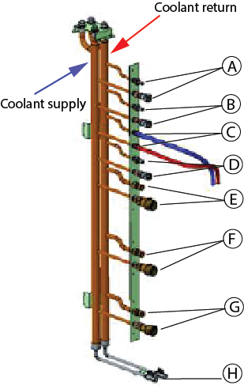
- Make sure power is no longer reaching the system PDU and gradient PDU by measuring the voltage at the test points.
Figure 41. Gradient PDU test points
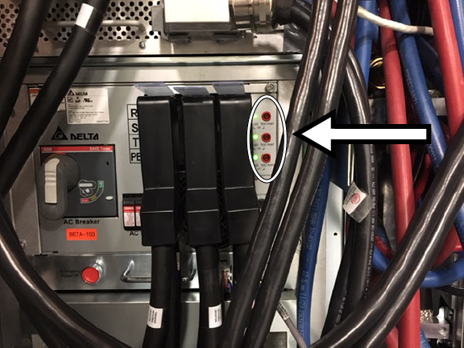
Figure 42. System PDU test points

- Open the ISC front doors far enough to provide clearance and access to the inside of the cabinet.note: The front doors can also be removed if there is not enough space to open them all the way. Disconnect the ground wire and lift the doors up off the hinges and away from the cabinet.
- Disconnect the cables and loosen the RGA screws.
Figure 43. Cable connections and screw locations
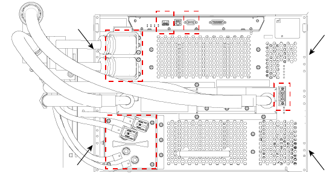
note: When removing radlok connections, if the radlok connection is fused to the post, cut the cable where it attaches to the radlok connector. - Disconnect the cables and loosen the RGA screws.
Figure 44. Disconnect all cables attached to the RGA
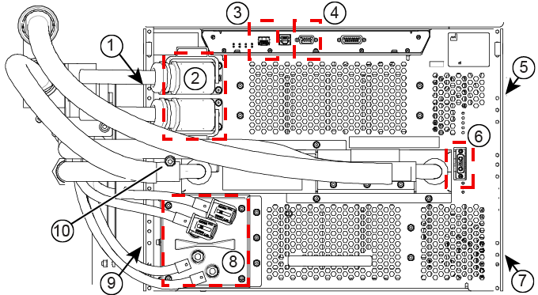
1 RGA screw(s) 2 Bridge connections 3 J1 4 J3 5 RGA screw(s) 6 J8 7 RGA screw(s) 8 Gradient cables (radlok shown) 9 RGA screw(s) 10 Ground connection location - Connect the cables and tighten the RGA screws.
Figure 45. Disconnect all cables attached to the RGA
1 RGA screw(s) 2 Bridge connections 3 J1 4 J3 5 RGA screw(s) 6 J8 7 RGA screw(s) 8 Gradient cables (radlok shown) 9 RGA screw(s) 10 Ground connection location - Disconnect the input cables by depressing the button and lifting up on the rad-lock connectors.
Figure 46. RPS input cables
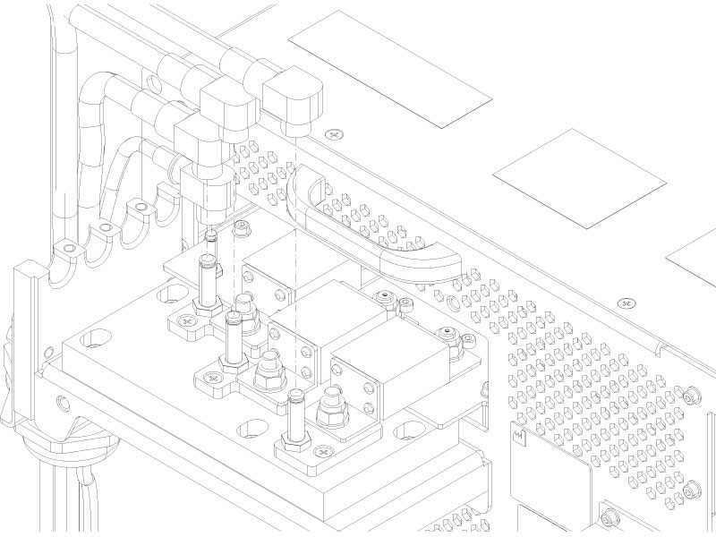
- Install the lift brackets on the RGA.The lift bracket offset should be positioned towards the front of the RGA (away from the ISC).note: You may need to disconnect cables from adjoining units to install the lift bracket.
Figure 47. Install the lift brackets
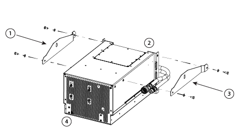
- Locate the DCPS cable bracket in the combined cabinet.
- If necessary, cut the ties securing the cables to the bracket.
- Loosen the screws that hold the cable bracket.
- Push up on the right side of the cable bracket and remove it.
Figure 48. Removing DCPS bracket
- Slide the MEMS DCPS out.note: The DCPS tray is tightly inserted under the tab at the back of the shelf. Use enough pull-force to remove it.
- Reconnect the cables and AC input.
- Reinstall the DCPS cable bracket.
- Unstrap the FRU crate, remove the cover and roll the FRU box out of the crate.Save the cotter pins if needed for shipping the returnable unit.
Figure 49. FRU crate and box
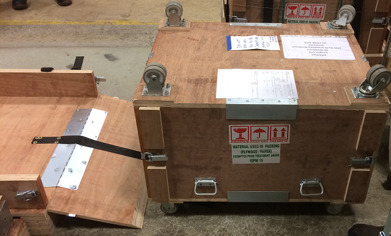
- Remove the top of the FRU box and set it aside for later user.
Figure 50. FRU box top
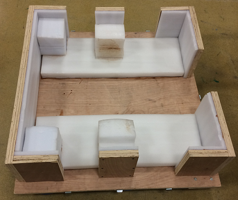
The sides of the FRU box can be removed for easier access. Loosen the brackets first to remove. - Remove the FRU hoist brackets and set them aside for later use.
- Remove the leak sensor.
Figure 51. Remove the leak sensor

- Disconnect two connectors.
- Loosen six screws.
- Remove the leak sensor assembly.
- Replace the leak sensor.
Figure 52. Replace the leak sensor
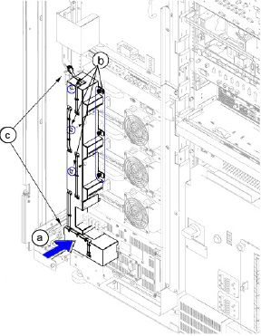
- Replace the leak sensor assembly.
- Tighten six screws.
- Connect two connectors.
- Drain the coolant. Refer to Draining Operation before replacing RF Amp, SSSA, or SSSPS.

- notice
- Turn the CCU circuit breaker switch to the OFF position.The CCU circuit breaker (4Q1) is located on the ICC control unit.
- Before disconnecting any hoses, verify that the ICC is turned off and place paper towels below the manifold drain valves to collect any coolant spillage.
- Disconnect the IN and OUT quick couplers of SSSPS from the water manifold.
Figure 53. Water manifold socket order
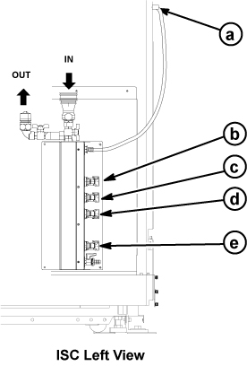
a RF amp b RGA (X) c RPS (X) d RGA (Y) e RGA (Z) RPS (Y) RPS (Z) - Connect the IN and OUT lines as illustrated and tie it down to secure it.
Figure 54. Water manifold lines
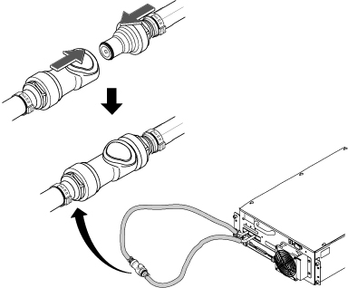
- Install the universal lift hoist on top of the ISC. Refer to Hoist Setup.
- Pull out (extend) the outer rails from inside the cabinet and connect them to the inner slide rails on the module (or component).
- notice
- Loosen the hoist chain and remove the lift brackets.
- Slowly push the unit back into the ISC taking care not to pinch any cables or hoses.
- service licenses
- Use one of the following methods to access the Service License GUI.
- From the operator console, click the drop-down menu on the Tools icon.
Figure 55. Tools icon drop-down menu

- Double-click the key icon on the bottom right corner of the Tools Desktop.
- Login as root during system boot up.
- From the operator console, click the drop-down menu on the Tools icon.
- Guided Install
- Launch Guided Install.If needed, see Accessing Guided Install for more information.
- In the left navigation pane, go to .
- Invoke Guided Install as root.
- When you power up the host computer and see the login screen, click on root login.
Figure 56. Login screen
- Type the user name: root and type the root password.
Figure 57. Welcome login screen
 note: It is possible that the customer changed the default password. If you cannot log in, contact the customer for the correct password.Logging in as the root user automatically displays the Linux desktop and launches the Guided Install Starter window.
note: It is possible that the customer changed the default password. If you cannot log in, contact the customer for the correct password.Logging in as the root user automatically displays the Linux desktop and launches the Guided Install Starter window. - Click Yes to invoke the guided install.note: If No has already been selected, right-click on the Linux desktop and select Start Guided Install.
- When you power up the host computer and see the login screen, click on root login.
- Open Guided Install in FE Mode.
- Insert the Service Key.
- Open the Common Service Desktop.
- Under the Configuration tab, select .
Figure 58. Guided Install FE Mode

- When the C shell opens, type the root password.note: The default root password is operator. It is possible that the customer changed the password. If you cannot log in, contact the customer for the correct password.
- Verify the serial number on the magnet rating plate matches the value listed on the Guided Install Hardware configuration screen. See Accessing Guided Install.
- Click Install IRM Software.
Figure 59. IRM installation screen

- ICW The Installation and Calibration Wizard provides an interface to navigate through required system procedures, checks, and calibrations.
- From the Common Service Desktop select .note:When running ICW, the calibration tools are launched and finalized from within the ICW interface.
Figure 60. ICW calibration tool interface

When running these tools within ICW, some of the finalization tasks such as Doing a TPS reset or Saving information will be automatically completed by ICW.
- Fill Coolant
- Check to make sure there is enough available coolant near the ICC.note: The coolant fluid is dyed for easy detection of leaks. This also helps distinguish between a leak and any abnormal condensation on the hoses.
- Use the tank funnel extension to fill the CCU and GCU with coolant as needed.note: Make sure the CCU/GCU power is off when filling the coolant tanks and checking coolant levels.note: The CCU and GCU tanks each contain approximately 4.5 gallons (17 L). A full system will use approximately 24 to 28 gallons (90 to 106 L).
Figure 61. Coolant fill
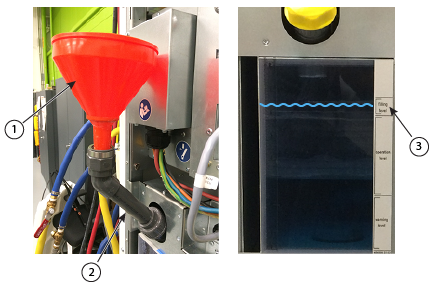
1 Funnel 2 Tank funnel extension 3 Tank filling level indicator - Unscrew the cap from the tank.
- Connect the funnel extension to the tank fill port and insert the funnel.
- Fill the tank until the coolant level is within the filling level on the tank indicator.
- Screw the cap back on the tank.
- Repeat for the other cooling unit.
- Calibrating System Gain and SNR Tool
- Move the cradle 320 mm from the home position and landmark, but do not advance to scan.
- Run the cradle in so the display reads 1135 mm.
Figure 62. Distance between landmark and center mark on body loader

- Put the body loader on the Service Foam Positioner. Turn on the alignment light and then position the body loader on the cradle so that the alignment light is properly centered on the loader crosshair.Do not landmark after completing this step.
- Press Advance to Scan.
- From the Common Service Desktop select .
- Click Click here to start this tool to open the tool and click OK to the prompt(s).
Figure 63. Daily Automated Quality Assurance Menu
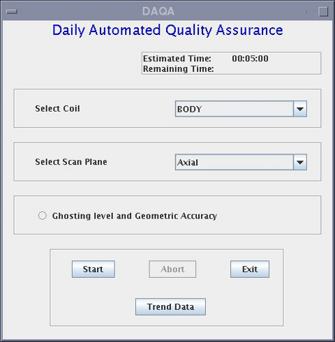
- Click here to start this tool.
The SNR and System Gain Calibration Tool window shows.
- Keep as the Coil value.
- Select the Start button.
- Pivoting the patient table control box
- Remove two screws securing the right-hand side of the table control box to the dock frame.
Figure 64. Table control box screws
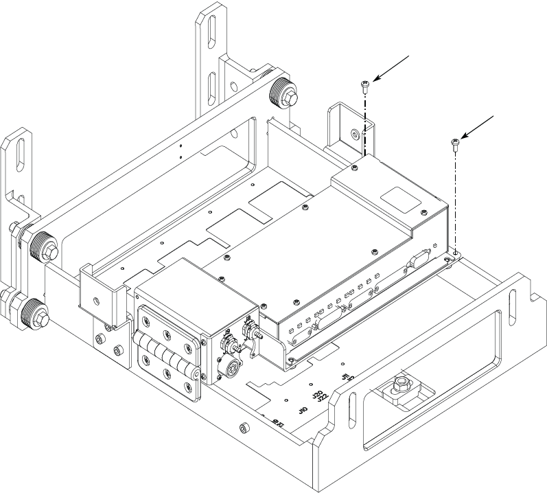
- Pivot the table control box to a vertical position.
- Restoring the patient table control box
- Lower the table control box back to a horizontal position.
- Install two screws securing the table control box to the dock frame.
Figure 65. Table control box screws
- Table casters
- Screw rod
- Relief valve opening tool
- Table gap check tool
- Coherent Noise Test
- note:
- In the Regular mode (Planned Maintenance mode), the tool performs a scan of 100 kHz above and below the center frequency. For example, CF ± 100 kHz.
- The tool displays a status of Pass or Fail in this mode.
- As the tests run, status messages show in the text box below the menu. As each test runs, a message shows which data is being collected or processed. Start time and estimated completion times also show.
- You can use the scroll bar on the right to move up or down through the messages.
- Although the estimated time may expire, the test is not complete until you see a success or failure message.
- Login related software procedures
- note: It is possible that the customer changed the default password. If you cannot log in, contact the customer for the correct password.
- Installing software options with eLicense generated keys
- Go to the eLicense website http://elicense.gehealthcare.com and log on using your single sign-on (SSO) username and password.
- Select the Service Tools Desktop.
- From the Service Desktop Manager, select Guided Install and select Start… to open Guided Install.
- When a command window displays the message Type Root Password, type the system's root password: operator (default), and press Enter.note: It is possible that the customer changed the default password. If you cannot log in, contact the customer for the correct password.
- Once the Guided Install window opens, select the Option Key tab.
- Select to exit the Guided Install tool.
- Reboot the computer and verify that all options are available.
- Complete a SaveInfo to retain all newly installed options on an Info MOD.
- Rename the file by typing mv license.sh flexkeys_install.
- Reboot the system.
- Verify that a dialog box displays the message New option keys have been installed after the Please do not interact with the system until this message disappears… window disappears.
Figure 66. Boot up message after installing new options
- Open Guided Install, and verify the downloaded option keys are installed as permanent keys on the Option Key tab.
- Installing the inverted button label on the pneumatic alert box
- Clean the surface of the control box.
- Remove the adhesive backing from the metal nameplate and apply the nameplate over the silk screened lettering as shown.
Figure 67. Control box nameplate
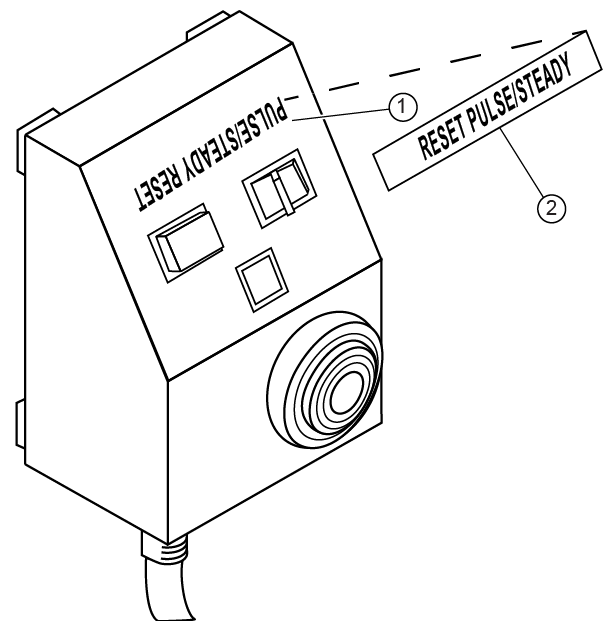
1 Silkscreen 2 Nameplate - Raising the Bellows Cover
- Remove the six screws securing the bottom of the bellows cover; three on the left-hand side and three on the right-hand side.
Figure 68. Bellows cover screws
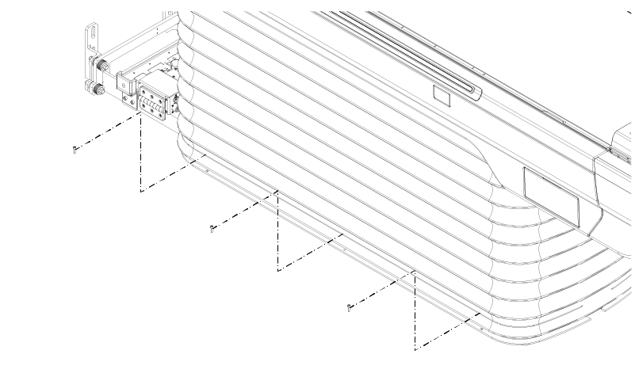
- Lift up the bellows cover and secure it in the up position with six strips of Velcro.
Figure 69. Bellows cover Velcro strips

- Lowering the bellows cover
- Remove the six screws at the top of the bellows cover, three on the left-hand side and three on the right-hand side, and lower the bellows cover.
Figure 70. Bellows cover top screws

- Restoring the bellows cover from raised
- Release the six strips of Velcro holding the bellows cover up.
Figure 71. Bellows cover Velcro strips
- Install the six screws that secure the bottom of the bellows cover; three on the left-hand side and three on the right-hand side.
Figure 72. Bellows cover screws
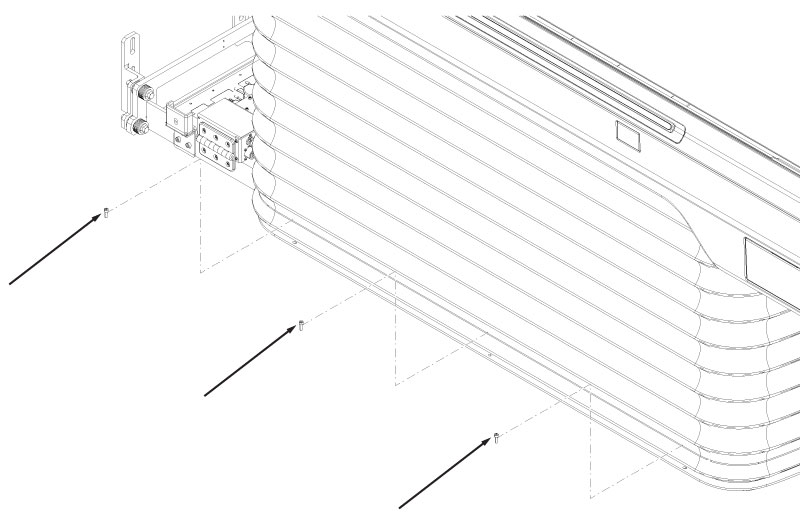
- Use a DVM to measure the resistance of input to the dummy load.
- Measure directly on the dummy load input connector – center pin to GND.
Figure 73. Measure dummy load input resistance

- Confirm that the resistance measures 50 ohms ± 5 ohms.
- notice
- Measure directly on the dummy load input connector – center pin to GND.
- On the front of the exciter, set the RF ENB switch to the disabled (down) position.
- On the front of the exciter, set the RF ENB switch to the enabled (up) position.
- Amplifier
- Set the RF amp breaker to the Off position.
Figure 74. RF amplifier breaker off

- Restore the system power. See Removing LOTO - ISC.
- Wait for the pressure meter (black meter) of CCU to move for about 40 seconds.
Figure 75. Pressure meter
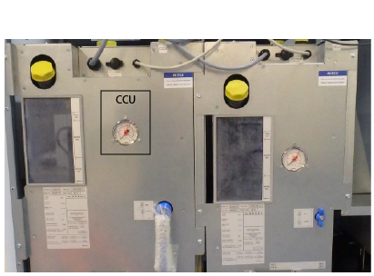
- Turn the RF amplifier breaker on.
Figure 76. RF amplifier breaker on

- wattmeter
- Locate the element offset factors card in the kit and find the offset for "3T DVMR Head Output” and "4500 W". The meter is now ready to calibrate the RF amplifier output power for body channel 1. The meter is now configured to calibrate the RF amplifier output power for the head channel. Locate the Element Offset Factors card in the kit and find the offset for “3T Dual Drive Body Output.”
- Press ◄ to return to measurement mode.
Figure 77. Wattmeter set to display peak power

-
Press the
OK
button on the wattmeter.
Figure 78. Bird 5000-XT wattmeter
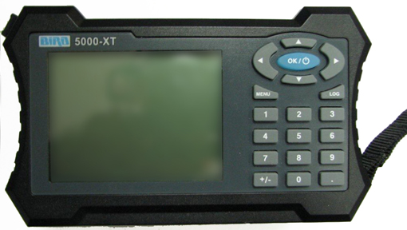
- Make sure that the scanner is idle and that the RF ENB switch on the DTX1 exciter is set to the disabled (down) position.
- Plug the wattmeter power supply into a service outlet (batteries are often not charged). Connect one end of the wattmeter cable to the RS232 sensor connector. Connect the other end to the coupler.
- Plug the fan for the dummy load into a service outlet. Never use this dummy load without its fan running.
- notice
- Set the RF ENB switch to the enabled (up) position.
- EPI White Pixel test
- Remove any phantoms from the cradle.
- Move the cradle from the home position, landmark, and then advance to scan.
- Measuring fixed table height
- Make sure the height difference between the table top and the bridge top on both the left and right sides is less than 1 mm.
Figure 79. Table height measurement point
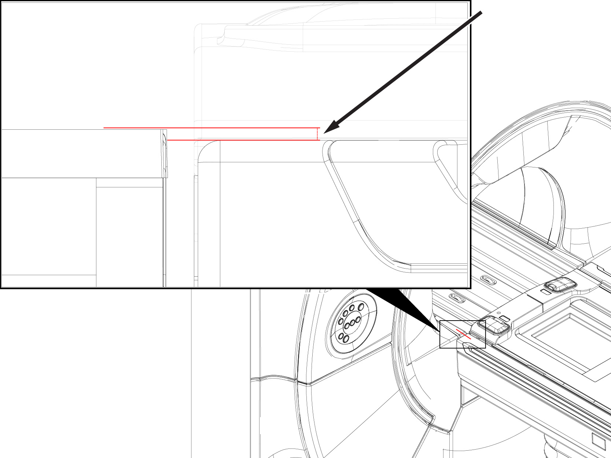
- Remove the screw securing the actuator lower pin holder.
Figure 80. Actuator lower pin holder
1 Screw 2 Actuator lower pin holder - Remove the actuator lower pin holder.
- Remove the lower pin.
Figure 81. Actuator lower pin
- Turn on or restart the computer. Press F2 to enter the BIOS Setup menu. note: Optionally, press F12, then select the BIOS Setup menu.
- Clutch
- Manually turn the clutch so that the upper and lower clutch screws are positioned as shown below.
Figure 82. Clutch screw
- Press the cradle in button on the control panel and position the cradle approximately 500 mm (20 inches) into the bore.
- Pull up the cradle release handle and release it. The cradle will move back to the home position.note: While in egress, the handle must be continuously activated for the cradle to move. If the cradle is positioned between 0 mm and 750 mm, releasing the egress handle will cause the cradle to decelerate and move slowly to the home position. If the cradle is positioned beyond 750 mm, releasing the egress handle will cause the cradle to decelerate and stop.
- Make sure the cradle is locked in place at the home position.
- Press the cradle in button on the control panel and position the cradle approximately 2500 mm (100 inches) into the bore.
- Pull up the cradle release handle and hold it. The table will start to move automatically. Continue to hold the handle and walk with the table until it reaches the home position.
- Make sure the cradle is locked in place at the home position.
Save the following items and keep them together for future use:
Example
Figure 83. Dell T5810 hard drives with wiring harness connections

| Item | Power connector | Data | Contents |
|---|---|---|---|
| 1 | HDD1 - DATA | SSD | Image data |
| 2 | HDD0 - Boot Drive | SSD | Application software |
Figure 84. HP z420 Hard Drives with wiring harness connections
| 1 | Top slot, power connection D3 |
| 2 | Middle slot, power connection D2 |
| 3 | Bottom slot, power connection D1 |
| 1 | Hooks |
| 2 | Bracket |
Finalization
- Open the facility water valves and check all the hose connections to make sure there are no leaks.
- Turn on the F-50 cryocooler power and confirm that the F-50 and the cold head are working correctly.
- Turn on the ISC power. Refer to Removing ISC LOTO.
- Perform check scan.
- Restore the power (Removing LOTO - ISC).
- Do an E-Stop functional check (Checking the Emergency Stop and Off functions).
- Do a check scan (Doing a check scan).
- To finalize this procedure, remove any phantoms and/or tools used.
- Perform a Check Scan before turning the unit over to the customer. See Doing a check scan.